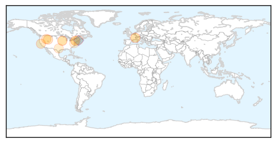

Hepatitis
30-Day Web Trend
0 alerts, 0 warnings

30-Day Twitter Trend
1 alerts, 0 warnings

Article Locations

Article Confidences

Top Articles:
- 0.948
- McDonald’s customer sued operator for exposing diners to hepatitis A
- 0.920
- STDs reaching all-time highs in US
- 0.853
- Health care workers at heightened risk of hepatitis C
- 0.847
- 18 people infected with hepatitis C in single hospital
- 0.673
- Implementation of the Lancet Standing Commission on Liver Disease in the UK
- 0.629
- Orencia Safe in RA, Even With HBV
- 0.525
- Study: European hospitals miss HIV in patients with other diseases
Top Tweets:
-
No tweets found for Nov 20, 2015
Influenza
30-Day Web Trend
0 alerts, 0 warnings

30-Day Twitter Trend
1 alerts, 0 warnings

Article Locations
Article Confidences
Top Articles:
- 1.000
- Tama County, State Public Health warn of flu dangers - TamaToledoNews.com
- 0.993
- Flu shots advised, but effect is varied
- 0.983
- WHO holds global influenza vaccine conference
- 0.751
- November 20, 2015 Archives
- 0.751
- November 19, 2015 Archives
- 0.751
- November 19, 2015 Archives
- 0.572
- Uber delivers flu shots in 36 cities, in one-day experiment
- 0.572
- Uber delivers flu shots in 36 cities, in one-day experiment
- 0.528
- Final flu clinics wrapping up next week
- 0.523
- Johnson & Johnson
- 0.518
- Health Department holds children flu shot clinic
Top Tweets:
- 0.895
- .@DLHDara Was it a lab confirmed case of flu? Lots of ILIs - influenza-like illnesses - go around in flu season.